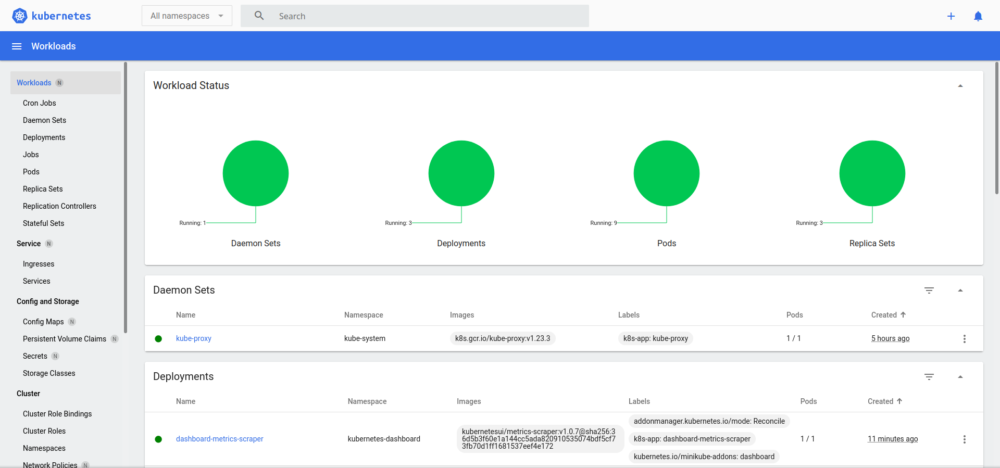

Tutorials: Local Deployment
1.Installation
kubectl
Install kubectl by referring the guidd.
Download kubectl.
james@lizard:/opt> curl -LO "https://dl.k8s.io/release/$(curl -L -s https://dl.k8s.io/release/stable.txt)/bin/linux/amd64/kubectl"
Install kubectl.
james@lizard:/opt> sudo install -o root -g root -m 0755 kubectl /usr/local/bin/kubectl
james@lizard:/opt> l /usr/local/bin/kubectl
-rwxr-xr-x 1 root root 45711360 May 28 14:49 /usr/local/bin/kubectl*
Test to ensure the version you installed is up-to-date:
james@lizard:/opt> kubectl version --client
WARNING: This version information is deprecated and will be replaced with the output from kubectl version --short. Use --output=yaml|json to get the full version.
Client Version: version.Info{Major:"1", Minor:"24", GitVersion:"v1.24.1", GitCommit:"3ddd0f45aa91e2f30c70734b175631bec5b5825a", GitTreeState:"clean", BuildDate:"2022-05-24T12:26:19Z", GoVersion:"go1.18.2", Compiler:"gc", Platform:"linux/amd64"}
Kustomize Version: v4.5.4
Minikube
Install Minikube by referring to the guide.
Installation.
james@lizard:/opt> curl -LO https://storage.googleapis.com/minikube/releases/latest/minikube-linux-amd64
% Total % Received % Xferd Average Speed Time Time Time Current
Dload Upload Total Spent Left Speed
100 69.2M 100 69.2M 0 0 5720k 0 0:00:12 0:00:12 --:--:-- 6328k
james@lizard:/opt> sudo install minikube-linux-amd64 /usr/local/bin/minikube
james@lizard:/opt> ll /usr/local/bin/minikube
-rwxr-xr-x 1 root root 72651748 May 28 14:56 /usr/local/bin/minikube
Start start cluster.
james@lizard:/opt> minikube start
minikube v1.25.2 on Opensuse-Leap 15.3
Using the docker driver based on existing profile
docker is currently using the btrfs storage driver, consider switching to overlay2 for better performance
Starting control plane node minikube in cluster minikube
Pulling base image ...
Updating the running docker "minikube" container ...
Preparing Kubernetes v1.23.3 on Docker 20.10.12 ...
▪ kubelet.housekeeping-interval=5ms
▪ Generating certificates and keys ...
▪ Booting up control plane ...
▪ Configuring RBAC rules ...
Verifying Kubernetes components...
▪ Using image gcr.io/k8s-minikube/storage-provisioner:v5
Enabled addons: default-storageclass, storage-provisioner
Done! kubectl is now configured to use "minikube" cluster and "default" namespace by default
Two folders were created after minikube start.
~/.kube: default config file was created here.~/.minikube: configure files of Minikube.
Check what Docker images has been pulled down and what containers are up after Minikube start.
james@lizard:/opt> docker images --all
REPOSITORY TAG IMAGE ID CREATED SIZE
kicbase/stable v0.0.30 1312ccd2422d 3 months ago 1.14GB
james@lizard:/opt> docker container ls -all
CONTAINER ID IMAGE COMMAND CREATED STATUS PORTS NAMES
5ec9c519d1e1 kicbase/stable:v0.0.30 "/usr/local/bin/entr…" 39 minutes ago Up 39 minutes 127.0.0.1:49157->22/tcp, 127.0.0.1:49156->2376/tcp, 127.0.0.1:49155->5000/tcp, 127.0.0.1:49154->8443/tcp, 127.0.0.1:49153->32443/tcp minikube
Get all nodes and namespaces deployed by default after Minikube installed.
james@lizard:/opt> kubectl get nodes
NAME STATUS ROLES AGE VERSION
james@lizard:/opt> kubectl get ns
NAME STATUS AGE
default Active 4h51m
kube-node-lease Active 4h51m
kube-public Active 4h51m
kube-system Active 4h51m
Enbale Minikube addon - Dashboard.
james@lizard:/opt> minikube addons list
james@lizard:/opt> minikube addons enable dashboard
Get all the services in all the namespaces.
james@lizard:/opt> kubectl get service --all-namespaces
NAMESPACE NAME TYPE CLUSTER-IP EXTERNAL-IP PORT(S) AGE
default kubernetes ClusterIP 10.96.0.1 <none> 443/TCP 5h2m
kube-system kube-dns ClusterIP 10.96.0.10 <none> 53/UDP,53/TCP,9153/TCP 5h2m
kubernetes-dashboard dashboard-metrics-scraper ClusterIP 10.110.44.98 <none> 8000/TCP 49s
kubernetes-dashboard kubernetes-dashboard ClusterIP 10.108.121.183 <none> 80/TCP 49s
james@lizard:/opt> kubectl get svc --all-namespaces
NAMESPACE NAME TYPE CLUSTER-IP EXTERNAL-IP PORT(S) AGE
default kubernetes ClusterIP 10.96.0.1 <none> 443/TCP 5h2m
kube-system kube-dns ClusterIP 10.96.0.10 <none> 53/UDP,53/TCP,9153/TCP 5h2m
kubernetes-dashboard dashboard-metrics-scraper ClusterIP 10.110.44.98 <none> 8000/TCP 49s
kubernetes-dashboard kubernetes-dashboard ClusterIP 10.108.121.183 <none> 80/TCP 49s
Get details of deployment kubernetes-dashboard.
james@lizard:/opt> kubectl get deployment -n kubernetes-dashboard
NAME READY UP-TO-DATE AVAILABLE AGE
dashboard-metrics-scraper 1/1 1 1 5m54s
kubernetes-dashboard 1/1 1 1 5m54s
Explore the dashboard, and verify it via http://localhost:9090
james@lizard:/opt> kubectl -n kubernetes-dashboard port-forward deployment/kubernetes-dashboard 9090
The dashboard looks like below.

Helm
Helm is the Kubernetes package manager. It doesn't come with Kubernetes.
Three concepts of helm:
- A Chart is a Helm package.
- It contains all of the resource definitions necessary to run an application, tool, or service inside of a Kubernetes cluster.
- Think of it like the Kubernetes equivalent of a Homebrew formula, an Apt dpkg, or a Yum RPM file.
- A Repository is the place where charts can be collected and shared.
- It's like Perl's CPAN archive or the Fedora Package Database, but for Kubernetes packages.
- A Release is an instance of a chart running in a Kubernetes cluster.
- One chart can often be installed many times into the same cluster. And each time it is installed, a new release is created.
- Consider a MySQL chart. If you want two databases running in your cluster, you can install that chart twice. Each one will have its own release, which will in turn have its own release name.
Reference:
Helm Client Installation:
james@lizard:/opt> curl -fsSL -o get_helm.sh https://raw.githubusercontent.com/helm/helm/main/scripts/get-helm-3
james@lizard:/opt> chmod 700 get_helm.sh
james@lizard:/opt> ./get_helm.sh
Downloading https://get.helm.sh/helm-v3.9.0-linux-amd64.tar.gz
Verifying checksum... Done.
Preparing to install helm into /usr/local/bin
helm installed into /usr/local/bin/helm
Note:
helm init does not exist in Helm 3, following the removal of Tiller. You no longer need to install Tiller in your cluster in order to use Helm.
helm search can be used to search two different types of source:
helm search hubsearches the Artifact Hub, which lists helm charts from dozens of different repositories.helm search reposearches the repositories that you have added to your local helm client (with helm repo add). This search is done over local data, and no public network connection is needed.
kind
Installing From Release Binaries, which are available on releases page. Refer to Quich Start.
NOTE: kind does not require kubectl, but we will not be able to perform some of tasks without it. kind requires that you have Docker installed and configured.
Download the binary and copy to /usr/local/bin directory.
james@lizard:/opt> curl -Lo ./kind https://kind.sigs.k8s.io/dl/v0.14.0/kind-linux-amd64
james@lizard:/opt> chmod +x ./kind
james@lizard:/opt> sudo cp ./kind /usr/local/bin
To see all the clusters we have created.
james@lizard:/opt> kind get clusters
No kind clusters found.
kubeadm
Use the kubeadm tool to create and manage Kubernetes clusters. It performs the actions necessary to get a minimum viable, secure cluster up and running in a user friendly way.
prerequisite:
- 2 GB or more of RAM per machine (any less will leave little room for your apps).
- 2 CPUs or more.
- Full network connectivity between all machines in the cluster (public or private network is fine).
- Unique hostname, MAC address, and product_uuid for every node. See here for more details.
- Certain ports are open on your machines. See here for more details. These required ports need to be open in order for Kubernetes components to communicate with each other. Use command
nc 127.0.0.1 6443to check if a port is open. - Swap disabled. You MUST disable swap in order for the kubelet to work properly.
Below packages are needed:
kubeadm: the command to bootstrap the cluster.kubelet: the component that runs on all of the machines in your cluster and does things like starting pods and containers.kubectl: the command line util to talk to your cluster.
Install CNI plugins (required for most pod network):
james@lizard:/opt> CNI_VERSION="v0.8.2"
james@lizard:/opt> ARCH="amd64"
james@lizard:/opt> sudo mkdir -p /opt/cni/bin
james@lizard:/opt> curl -L "https://github.com/containernetworking/plugins/releases/download/${CNI_VERSION}/cni-plugins-linux-${ARCH}-${CNI_VERSION}.tgz" | sudo tar -C /opt/cni/bin -xz
% Total % Received % Xferd Average Speed Time Time Time Current
Dload Upload Total Spent Left Speed
0 0 0 0 0 0 0 0 --:--:-- 0:00:01 --:--:-- 0
100 34.9M 100 34.9M 0 0 3090k 0 0:00:11 0:00:11 --:--:-- 4374k
Install crictl (required for kubeadm / Kubelet Container Runtime Interface (CRI))
james@lizard:/opt> DOWNLOAD_DIR=/usr/local/bin
james@lizard:/opt> CRICTL_VERSION="v1.22.0"
james@lizard:/opt> ARCH="amd64"
james@lizard:/opt> curl -L "https://github.com/kubernetes-sigs/cri-tools/releases/download/${CRICTL_VERSION}/crictl-${CRICTL_VERSION}-linux-${ARCH}.tar.gz" | sudo tar -C $DOWNLOAD_DIR -xz
% Total % Received % Xferd Average Speed Time Time Time Current
Dload Upload Total Spent Left Speed
0 0 0 0 0 0 0 0 --:--:-- 0:00:01 --:--:-- 0
100 17.8M 100 17.8M 0 0 157k 0 0:01:56 0:01:56 --:--:-- 154k
Install kubeadm, kubelet, kubectl and add a kubelet systemd service:
james@lizard:/opt> RELEASE="$(curl -sSL https://dl.k8s.io/release/stable.txt)"
james@lizard:/opt> ARCH="amd64"
james@lizard:/opt> cd $DOWNLOAD_DIR
james@lizard:/usr/local/bin> sudo curl -L --remote-name-all https://storage.googleapis.com/kubernetes-release/release/${RELEASE}/bin/linux/${ARCH}/{kubeadm,kubelet,kubectl}
% Total % Received % Xferd Average Speed Time Time Time Current
Dload Upload Total Spent Left Speed
100 42.3M 100 42.3M 0 0 9741k 0 0:00:04 0:00:04 --:--:-- 9741k
% Total % Received % Xferd Average Speed Time Time Time Current
Dload Upload Total Spent Left Speed
100 110M 100 110M 0 0 6555k 0 0:00:17 0:00:17 --:--:-- 4948k
% Total % Received % Xferd Average Speed Time Time Time Current
Dload Upload Total Spent Left Speed
100 43.5M 100 43.5M 0 0 683k 0 0:01:05 0:01:05 --:--:-- 139k
james@lizard:/usr/local/bin> sudo chmod +x {kubeadm,kubelet,kubectl}
james@lizard:/usr/local/bin> RELEASE_VERSION="v0.4.0"
james@lizard:/usr/local/bin> curl -sSL "https://raw.githubusercontent.com/kubernetes/release/${RELEASE_VERSION}/cmd/kubepkg/templates/latest/deb/kubelet/lib/systemd/system/kubelet.service" | sed "s:/usr/bin:${DOWNLOAD_DIR}:g" | sudo tee /etc/systemd/system/kubelet.service
[Unit]
Description=kubelet: The Kubernetes Node Agent
Documentation=https://kubernetes.io/docs/home/
Wants=network-online.target
After=network-online.target
[Service]
ExecStart=/usr/local/bin/kubelet
Restart=always
StartLimitInterval=0
RestartSec=10
[Install]
WantedBy=multi-user.target
james@lizard:/usr/local/bin> sudo mkdir -p /etc/systemd/system/kubelet.service.d
james@lizard:/usr/local/bin> curl -sSL "https://raw.githubusercontent.com/kubernetes/release/${RELEASE_VERSION}/cmd/kubepkg/templates/latest/deb/kubeadm/10-kubeadm.conf" | sed "s:/usr/bin:${DOWNLOAD_DIR}:g" | sudo tee /etc/systemd/system/kubelet.service.d/10-kubeadm.conf
# Note: This dropin only works with kubeadm and kubelet v1.11+
[Service]
Environment="KUBELET_KUBECONFIG_ARGS=--bootstrap-kubeconfig=/etc/kubernetes/bootstrap-kubelet.conf --kubeconfig=/etc/kubernetes/kubelet.conf"
Environment="KUBELET_CONFIG_ARGS=--config=/var/lib/kubelet/config.yaml"
# This is a file that "kubeadm init" and "kubeadm join" generates at runtime, populating the KUBELET_KUBEADM_ARGS variable dynamically
EnvironmentFile=-/var/lib/kubelet/kubeadm-flags.env
# This is a file that the user can use for overrides of the kubelet args as a last resort. Preferably, the user should use
# the .NodeRegistration.KubeletExtraArgs object in the configuration files instead. KUBELET_EXTRA_ARGS should be sourced from this file.
EnvironmentFile=-/etc/default/kubelet
ExecStart=
ExecStart=/usr/local/bin/kubelet $KUBELET_KUBECONFIG_ARGS $KUBELET_CONFIG_ARGS $KUBELET_KUBEADM_ARGS $KUBELET_EXTRA_ARGS
Enable and start kubelet:
james@lizard:/usr/local/bin> systemctl enable --now kubelet
==== AUTHENTICATING FOR org.freedesktop.systemd1.manage-unit-files ====
Authentication is required to manage system service or unit files.
Authenticating as: root
Password:
==== AUTHENTICATION COMPLETE ====
Created symlink /etc/systemd/system/multi-user.target.wants/kubelet.service → /etc/systemd/system/kubelet.service.
==== AUTHENTICATING FOR org.freedesktop.systemd1.reload-daemon ====
Authentication is required to reload the systemd state.
Authenticating as: root
Password:
==== AUTHENTICATION COMPLETE ====
==== AUTHENTICATING FOR org.freedesktop.systemd1.manage-units ====
Authentication is required to start 'kubelet.service'.
Authenticating as: root
Password:
==== AUTHENTICATION COMPLETE ====
james@lizard:/usr/local/bin> sudo systemctl status kubelet.service
● kubelet.service - kubelet: The Kubernetes Node Agent
Loaded: loaded (/etc/systemd/system/kubelet.service; enabled; vendor preset: disabled)
Drop-In: /etc/systemd/system/kubelet.service.d
└─10-kubeadm.conf
Active: activating (auto-restart) (Result: exit-code) since Sat 2022-06-11 12:28:00 CST; 3s ago
Docs: https://kubernetes.io/docs/home/
Process: 48965 ExecStart=/usr/local/bin/kubelet $KUBELET_KUBECONFIG_ARGS $KUBELET_CONFIG_ARGS $KUBELET_KUBEADM_ARGS $KUBELET_EXTRA_ARGS (code=exited, status=1/FAILURE)
Main PID: 48965 (code=exited, status=1/FAILURE)
Jun 11 12:28:00 lizard kubelet[48965]: Insecure values: TLS_ECDHE_ECDSA_WITH_AES_128_CBC_SHA256, TLS_ECDHE_ECDSA_WITH_RC4_128_SHA, TLS_ECDHE_RSA_WITH_3DES_EDE_CBC_SHA, TLS_E>
Jun 11 12:28:00 lizard kubelet[48965]: --tls-min-version string Minimum TLS version supported. Possible values: VersionTLS10, VersionTLS11, VersionTL>
Jun 11 12:28:00 lizard kubelet[48965]: --tls-private-key-file string File containing x509 private key matching --tls-cert-file. (DEPRECATED: This paramete>
Jun 11 12:28:00 lizard kubelet[48965]: --topology-manager-policy string Topology Manager policy to use. Possible values: 'none', 'best-effort', 'restricted',>
Jun 11 12:28:00 lizard kubelet[48965]: --topology-manager-scope string Scope to which topology hints applied. Topology Manager collects hints from Hint Prov>
Jun 11 12:28:00 lizard kubelet[48965]: -v, --v Level number for the log level verbosity
Jun 11 12:28:00 lizard kubelet[48965]: --version version[=true] Print version information and quit
Jun 11 12:28:00 lizard kubelet[48965]: --vmodule pattern=N,... comma-separated list of pattern=N settings for file-filtered logging (only works for >
Jun 11 12:28:00 lizard kubelet[48965]: --volume-plugin-dir string The full path of the directory in which to search for additional third party volume p>
Jun 11 12:28:00 lizard kubelet[48965]: --volume-stats-agg-period duration Specifies interval for kubelet to calculate and cache the volume disk usage for all p>
lines 1-19/19 (END)
At the moment, kubelet.service failed to start.
kubelet was just installed without proper configuration. Configuring each kubelet in your cluster using kubeadm